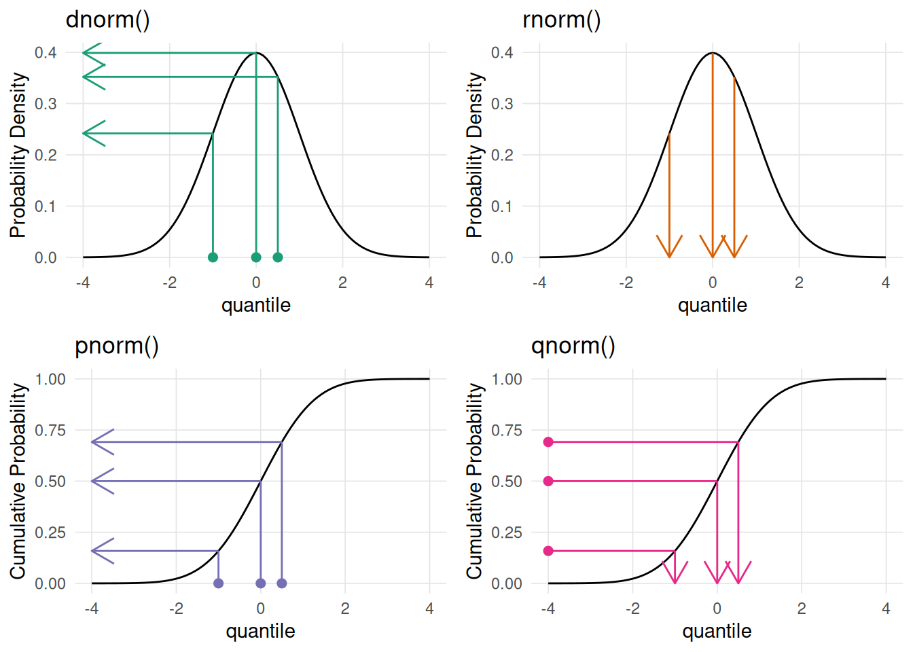
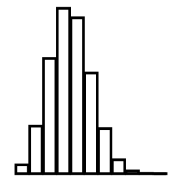
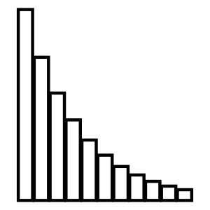
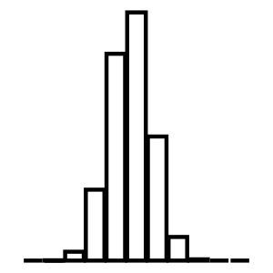
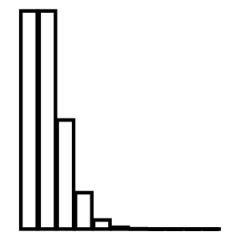
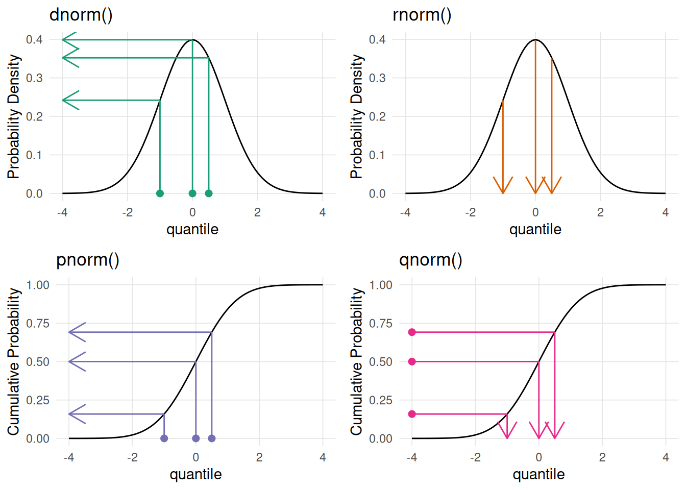
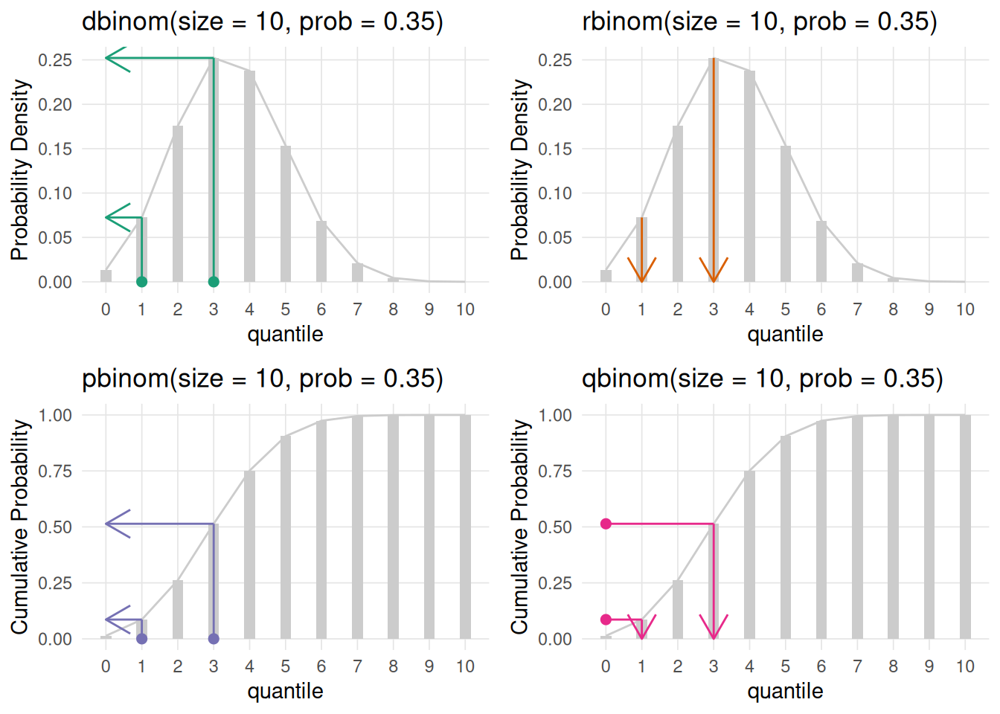
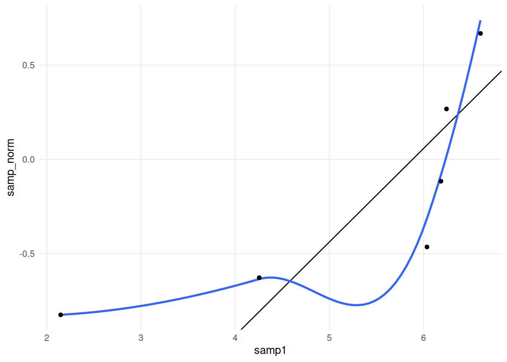
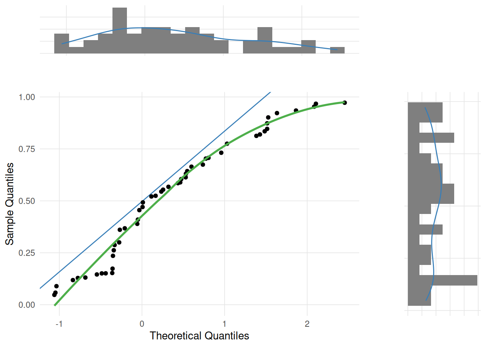
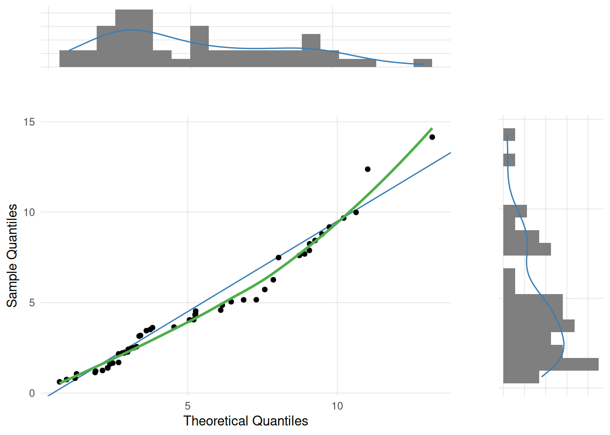

Show the code
plot_distributions(dist = 'norm',
xvals = c(-1, 0, 0.5),
xmin = -4,
xmax = 4)
When working with distributions in R, each distribution has four functions, namely:
dXXX - density function.rXXX - generate random number from this distribution.pXXX - returns the area to the left of the given value.qXXX - returns the quantile for the given value/area.Where XXX is the distribution name (e.g. norm, binom, t, etc.).
The VisualStats::plot_distributions() function will generate four plots representing the four R distribution functions. For each subplot points correspond to the first parameter of the corresponding function (note the subplot for the random rXXX function does not have points since this simply returns random values from that distribution). The arrows correspond to what that function will return.
The top two plots (dXXX and rXXX) plot the distribution. The bottom two plots are the cumulative density function for the given distribution. The CDF describes the probability that a random variable (X) will be less than or equal to a specific value (x), written as F(x) = P(X ≤ x). The CDF provides a complete view of a random variable’s distribution by accumulating probabilities up to that point.
Here is a full list of available distributions (note that the links go to the corresponding Wikipedia article).
 Beta
Beta Xbeta()(, )
 Binomial Xbinom()(, )
Cauchy Xcauchy()(, )
Chi-Squared Xchisq()(, )
Exponential Xexp()(, )
F Xf()(, )
Gamma Xgamma()(, )
 Geometric Xgeom()(, )
 Hypergeometric Xhyper()(, )
Logistic Xlogis()(, )
Log Normal Xlnorm()(, )
 Negative Binomial
Negative Binomial Xnbinom()(, )
Normal Xnorm()(, )
 Poisson Xpois()(, )
Student t Xt()(, )
Uniform Xunif()(, )
Weibull Xweibull()(, )
plot_distributions(dist = 'norm',
xvals = c(-1, 0, 0.5),
xmin = -4,
xmax = 4)
plot_distributions(dist = 'binom',
xvals = c(1, 3),
xmin = 0,
xmax = 10,
args = list(size = 10, prob = 0.35))
The distributions_shiny() function will launch a Shiny application that provides an interface to use the plot_distributions() function interactively.

normal_plot(mean = 0, sd = 1, cv = c(-1.96, 1.96))The quantile-quantile plot (Q-Q plot) is a graphical method for comparing two distributions. This is done by comparing the quantiles1 between the two distributions. Q-Q plots are often used to determine whether the distribution of a sample approximates the normal distribution, though it should be noted that it can be used for any type of distribution. To illustrate how the Q-Q plot is constructed, let’s begin with three populations with a uniform, skewed, and normal distribution.
pop_size <- 100000
samp_size <- 50
distributions <- data.frame(
unif_pop = runif(pop_size),
skew_pop = rchisq(pop_size, df = 5),
norm_pop = rnorm(pop_size, mean = 2, sd = 1)
)distributions |>
reshape2::melt(variable.name = 'distribution') |>
ggplot(aes(x = value, color = distribution)) +
geom_density() +
facet_wrap(~ distribution, scales = 'free', ncol = 1) +
theme_vs()
Let’s start with a small sample with n = 6.
samp1 <- sample(distributions$skew_pop, size = 6)
samp1[1] 6.605251 2.147276 6.244270 6.036563 6.184984 4.255935If we wish to determine if our sample approximates the normal distribution, we randomly select values (using n = 6) from the normal distribution using the rnorm function.
samp_norm <- rnorm(length(samp1))
samp_norm[1] -0.1160746 -0.8244852 -0.4644825 0.2672684 0.6679687 -0.6274922The Q-Q plot plots the theoretical quantiles (using the rnorm function in this example) against the sample quantiles. We take the two vectors, sort them, then combine them such that the smallest value from the sample is paired with the smallest value from the theoretical distribution (i.e. rnorm here), all the way to the largest values.
samp1 <- samp1 |> sort()
samp_norm <- samp_norm |> sort()
cbind(samp1, samp_norm) samp1 samp_norm
[1,] 2.147276 -0.8244852
[2,] 4.255935 -0.6274922
[3,] 6.036563 -0.4644825
[4,] 6.184984 -0.1160746
[5,] 6.244270 0.2672684
[6,] 6.605251 0.6679687The following scatter plot depicts the foundation of the Q-Q plot. If the two distributions are the same then we would expect all the points to fall on a straight line.
ggplot(cbind(samp1, samp_norm), aes(x = samp1, y = samp_norm)) +
geom_point() +
theme_vs()It is desirable to draw a straight line for reference, however determining the slope and intercept requires some work. If both the sample and comparison distributions are expressed as standard scores (i.e. mean = 0, standard deviation = 1), then we can draw the unit line (i.e. \(y = x\)).
ggplot(cbind(samp1, samp_norm), aes(x = scale(samp1), y = scale(samp_norm))) +
geom_abline(slope = 1, intercept = 0) +
geom_point() +
theme_vs()However, if we wish to retain the scaling of the original sample, we need an alternative strategy to determine the slope and intercept of the line. One common approach is to take the paired quantiles at the 25th and 75th percentiles and then calculate the equation of the line that intercepts those two points.
x_points <- quantile(samp1, probs = c(0.25, 0.75))
x_points 25% 75%
4.701092 6.229449 y_points <- quantile(samp_norm, probs = c(0.25, 0.75))
y_points 25% 75%
-0.5867398 0.1714326 slope <- diff(y_points) / diff(x_points)
intercept <- y_points[1] - slope * x_points[1]
ggplot(cbind(samp1, samp_norm), aes(x = samp1, y = samp_norm)) +
geom_abline(slope = slope, intercept = intercept) +
geom_point() +
theme_vs()An alternative variation to the Q-Q plot line would be to plot a Loess regression line. If the two distributions are the same then the Loess regression line should be a straight line. With very small samples as demonstrated below, however, the Loess estimation is not very good.
ggplot(cbind(samp1, samp_norm), aes(x = samp1, y = samp_norm)) +
geom_abline(slope = slope, intercept = intercept) +
geom_smooth(formula = y ~ x, method = 'loess', se = FALSE, span = 1) +
geom_point() +
theme_vs()
Let’s draw random samples of n = 50 from the three populations defined above.
unif_samp <- sample(distributions$unif_pop, size = samp_size)
skew_pop <- sample(distributions$skew_pop, size = samp_size)
norm_pop <- sample(distributions$norm_pop, size = samp_size)The following three figures are Q-Q plots comparing the sample distributions to the normal distribution using the gg_qq_plot function in the VisualStats package. This is slight variation on the traditional Q-Q plot by also plotting the marginal distributions.
gg_qq_plot(unif_samp, loess = TRUE)
gg_qq_plot(skew_pop, loess = TRUE)gg_qq_plot(norm_pop, loess = TRUE)Although the most common use of Q-Q plots is to determine whether a sample distribution approximates the normal distribution, technically the Q-Q plot allows for the comparison between any two distributions. For example, the skewed distribution example created above was randomly selected from a chi-squared distribution. The theoretical_dist parameter of the gg_qq_plot function allows you to change the comparison distribution.
gg_qq_plot(skew_pop, theoretical_dist = 'chisq', df = 5,
loess = TRUE)
Quantiles are simply cut points from a distribution such that the intervals have equal probabilities.↩︎